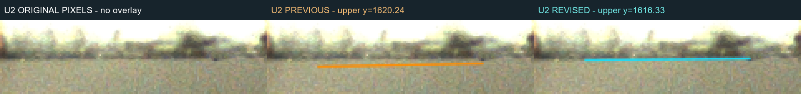
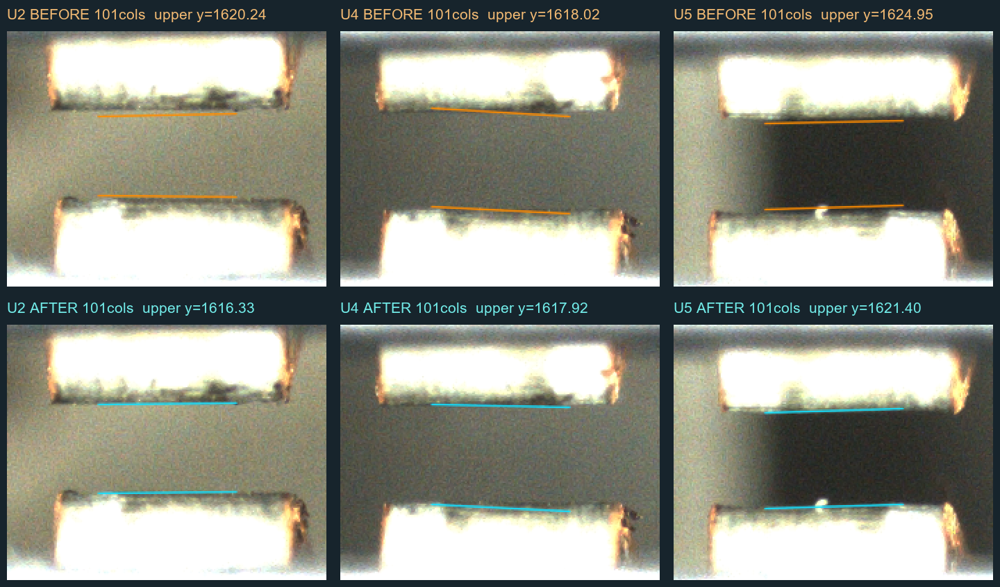
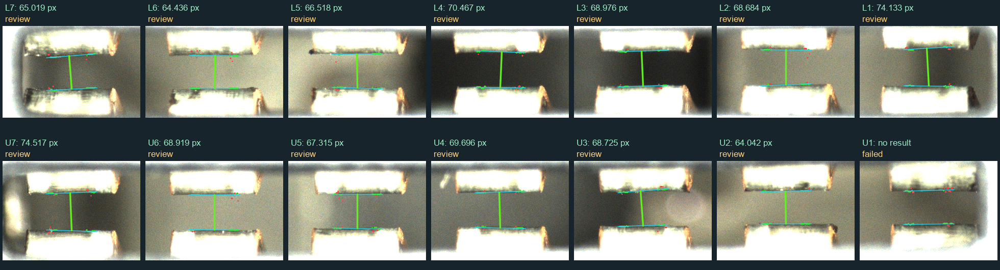
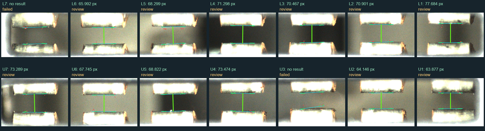
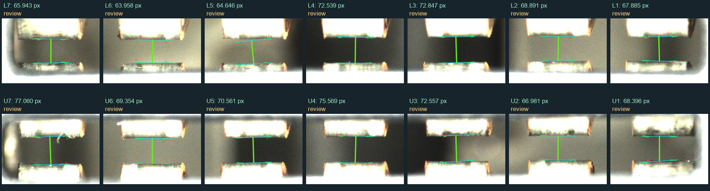
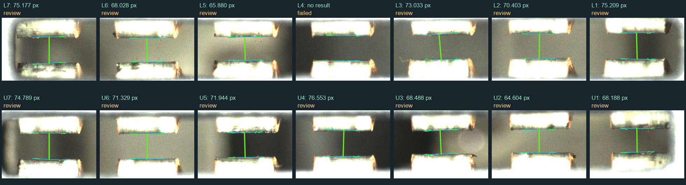
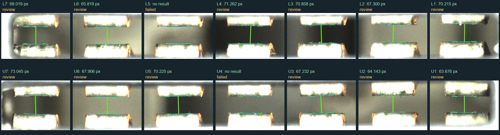
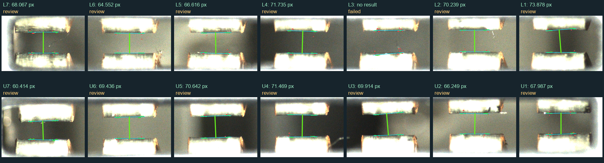

图片上排从左到右 L7 → L1，下排 U7 → U1。共6张图、84个位置；数据表顺序为U1～U7、L1～L7。
自动取边目标是金属唇边朝向开口的外轮廓。本轮以原图中的局部灰度跃迁定位实际边界，背景变化只用于辅助判断；用左右采样段确定直线，中间突起或凹口保留为诊断点。上下线独立拟合，不强制水平或平行，不利用实验室数值挑选边。
本轮：通过内部图像诊断 0 处、输出候选并提示复核 77 处、无有效输出 7 处。“通过”仅指图像诊断；还没有独立的毫米精度验证。手动选点是可选检查功能，自动结果无需重新手动点击。
若左右采样段混入不同边界、同一条直线无法解释这些实测点，则只保留诊断图，尺寸留空。不能把偏到背景中的拟合线当成有效测量。
从左到右：无覆盖的原始像素、上一版橙线、本轮青线。三幅使用完全相同的裁剪与倍率，便于核对线和可见轮廓的位置。

本轮保留 101 列实际采样（中心左右各 50 px），显示线段横向跨度为 100 px。左右定线区仍为距中心 29～46 px；本次修正的是边界位置，不是继续缩短线段或人为平移。
上行橙线：上一版背景起始偏离位置；下行青线：本轮局部灰度跃迁定位。两行使用相同原图裁剪和相同放大倍率。图中 upper y 是上拟合线在开口中心的原图纵坐标，越小表示越靠上。

| 位置 | 上版夹角 | 新版夹角 | 新版垂距 px | 状态 |
|---|---|---|---|---|
| U2 | 1.50359° | 0.73259° | 64.14641 | review |
| U4 | 0.95343° | 1.62672° | 73.47394 | review |
| U5 | 0.30790° | 0.13522° | 68.82194 | review |
夹角用于检查取线方向，不是把两条线拉成平行的目标。用户截图用于确定测量对象，未把截图中的手画线当成精确原图坐标或毫米真值。
青色：主体外轮廓拟合候选；绿色小点：左右定线区内点；红色小点：该区偏离拟合线的候选；绿色连线：垂距。failed位置仅保留诊断线、不输出有效尺寸。交互页面保留全部候选点和偏差，候选点不等于已确认的实体边。






| 图片 | U1 | U2 | U3 | U4 | U5 | U6 | U7 | L1 | L2 | L3 | L4 | L5 | L6 | L7 |
|---|---|---|---|---|---|---|---|---|---|---|---|---|---|---|
| 1.png | — | 64.04242 | 68.72486 | 69.69615 | 67.31502 | 68.91873 | 74.51666 | 74.13339 | 68.68412 | 68.97583 | 70.46670 | 66.51842 | 64.43555 | 65.01911 |
| 2.png | 63.87733 | 64.14641 | — | 73.47394 | 68.82194 | 67.74545 | 73.28871 | 77.68398 | 70.90128 | 70.46676 | 71.29757 | 68.29882 | 65.99238 | — |
| 3.png | 68.39641 | 66.98134 | 72.55677 | 75.56912 | 70.56099 | 69.35353 | 77.05977 | 67.88481 | 68.89124 | 72.84691 | 72.53947 | 64.64587 | 63.95801 | 65.94342 |
| 4.png | 68.18819 | 64.60430 | 68.48801 | 76.55345 | 71.94417 | 71.32865 | 74.78880 | 75.20904 | 70.40345 | 73.03329 | — | 65.88040 | 68.02755 | 75.17685 |
| 5.png | 63.67584 | 64.14261 | 67.23178 | — | 70.22455 | 67.90559 | 73.04463 | 70.21473 | 67.29972 | 70.85792 | 71.26170 | — | 65.81941 | 68.01946 |
| 6.png | 67.98698 | 66.24875 | 69.91440 | 71.46940 | 70.64249 | 69.43596 | 60.41372 | 73.87818 | 70.23872 | — | 71.73538 | 66.61555 | 64.55180 | 68.06724 |
当前垂距规则：下线段中点到上直线的垂距（待与实验室确认）。mm/px仍是现有样本拟合比例，并非物理标定。先确认主体边定义与图像重复性，再确定补偿；本次原Excel、原图及上一版报告均未修改。
取边算法没有使用实验室数值。以下每种方法分别拟合比例和逐位置偏移；整件留一每次用5件拟合、1件预测，6件已参与算法开发，因此仍不属于独立验收。覆盖不同的结果不能直接解释为精度改善。
| 方法 | 评估方式 | 覆盖 | MAE mm | 最大绝对误差 mm |
|---|---|---|---|---|
| 原49列法 | 同批拟合 | 84/84 | 0.01915 | 0.09019 |
| 原49列法 | 整件留一 | 84/84 | 0.02299 | 0.10873 |
| 主体外轮廓法 | 同批拟合 | 77/84 | 0.00937 | 0.02363 |
| 主体外轮廓法 | 整件留一 | 77/84 | 0.01148 | 0.02833 |